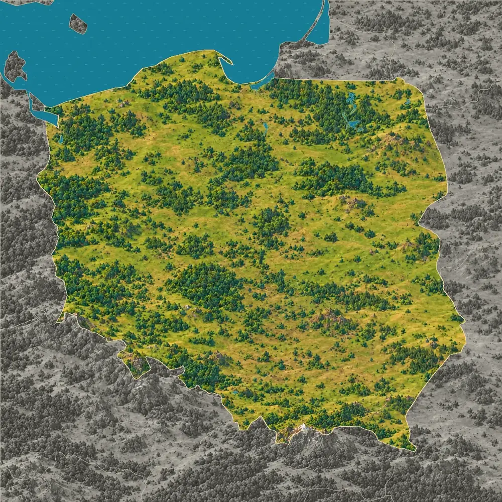
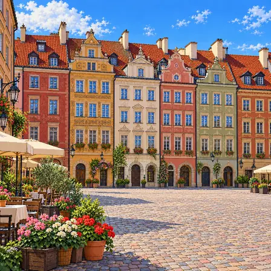
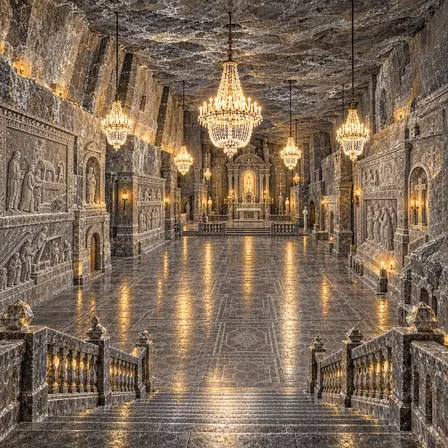
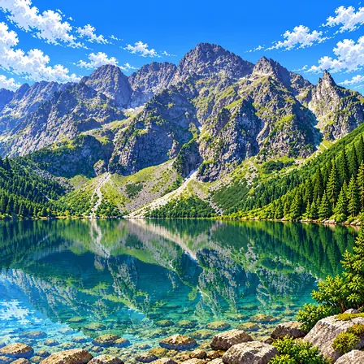
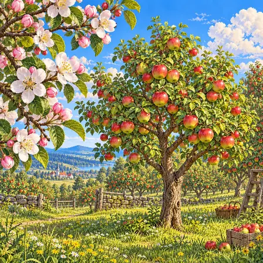
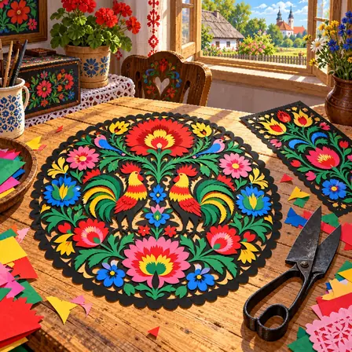
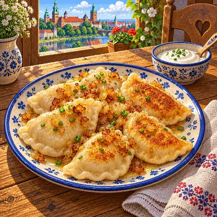
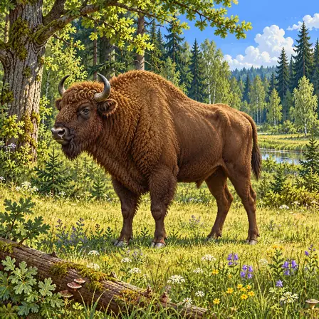
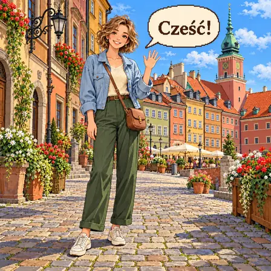

Three quarters lowland
About 75% of Poland is plains and low hills under 200 m above sea level. It sits in the middle of the wide plain that stretches across northern Europe, so fields dotted with patches of forest go on and on.
World Geography Atlas › Europe › Eastern Europe

Polska
Warsaw's Old Town rebuilt from old paintings · the land of pierogi and apples.

Most of Poland is low, flat farmland and forest. High mountains rise at its southern edge, and the north meets the Baltic Sea. The northeast has a great many lakes left behind by glaciers.
Poland lies on Europe's great plain, so three quarters of its land is lowland. The Sudetes rise in the southwest and the Tatras of the Carpathians in the south, while sandy coasts and lake districts run across the north.
About 75% of Poland is plains and low hills under 200 m above sea level. It sits in the middle of the wide plain that stretches across northern Europe, so fields dotted with patches of forest go on and on.
The Sudetes run along the border with Czechia in the southwest, and their highest peak, Śnieżka, is 1,603 m. On the border with Slovakia in the south rise the Tatras of the Carpathians, with Poland's highest, sharpest peaks and more than 100 mountain lakes.
Source: Karkonosze National Park, Na Śnieżkę · Tatra National Park, Wody (Waters)
The Baltic coast in the north is low and sandy. In Słowiński National Park near Łeba, the wind slowly shifts the sand dunes, and shallow lakes cut off from the sea by sandbars line the shore.
Source: Ramsar Convention, Słowiński National Park (Ramsar Site 757)
Lakes large and small lie in rows across Masuria in the northeast. The largest, Lake Śniardwy, covers about 110 km², yet even its deepest point is only about 23 m.
Source: International Lake Environment Committee, Lake Sniardwy
In the last ice age, a thick sheet of ice from Scandinavia covered northern Poland. As the ice pulled back north about 15,000 years ago, it dropped the soil and stones it had carried, leaving rows of low hills.
As the ice retreated, huge blocks of ice were left buried in the ground; when they later melted, the land above sank and became lakes. Lake Śniardwy formed this way about 12,000 years ago.
Source: International Lake Environment Committee, Lake Sniardwy
A city, a heritage site, nature, a plant, culture, food, an animal, a greeting and the flag of Poland, each drawn as pixel art.

Warsaw is the capital of Poland. Its old town was destroyed in a war and rebuilt just as it was before. Colorful houses around the square make it beautiful.
Warsaw is the capital of Poland, set on the banks of the Vistula River, which flows through the middle of the country. As a crossing point where boats and people traveled along the river, it held markets early on and grew into a city. In 1944, during the Second World War, German troops destroyed more than 85% of the Old Town, but the people rebuilt the Market Square and its colorful houses as they had been, using old paintings and records. The rebuilt Old Town was inscribed on the UNESCO World Heritage List in 1980. Today about 1.86 million people live in Warsaw, Poland's largest city.

The Wieliczka Salt Mine is an old salt mine that reaches deep underground. Miners carved a huge chapel out of salt rock. Even its chandeliers are made of salt.
The Wieliczka Salt Mine, near Kraków in southern Poland, is an underground mine where rock salt has been dug since the 13th century. Long ago a sea that covered this area dried up and left thick layers of salt, and as miners dug the salt they widened the tunnels across nine levels, reaching 327 m at the deepest point. The miners carved rooms and sculptures out of the salt rock, and in the largest, St. Kinga's Chapel, the altars, wall carvings and even the chandeliers are all made of salt. It is one of the 12 sites inscribed together when UNESCO named the very first World Heritage sites in 1978. Today many people walk along its underground paths to see the salt rooms.

Morskie Oko is a clear lake high in the mountains. Water filled a hollow that glaciers dug long ago. Its name means "Eye of the Sea."
Morskie Oko is the largest lake in the Tatra Mountains, at the southern tip of Poland. During the Ice Age, glaciers flowing down from the mountains carved the valley deep, and after the ice melted, water filled the hollow they left. It lies 1,395 m above sea level, covers about 35 ha, and is about 51 m deep at its deepest point. Around the lake rise sharp granite peaks that lead up to Rysy, Poland's highest summit at 2,499 m. The lake is protected in Tatra National Park, and its name means "Eye of the Sea" in Polish.

The apple tree blooms with white and pinkish flowers in spring. In autumn, round apples grow on it. Poland grows more apples than any other country in the European Union.
The apple tree is a fruit tree of the rose family that is common in Polish orchards. In spring it opens white and pale pink flowers with five petals, and after bees carry pollen between them, the base of each flower swells and ripens into a round fruit by autumn. Poland's cold winters and cool summers suit apple growing, and apple orchards cover more than 150,000 ha. In 2024 Poland grew 29% of the European Union's apples, more than any other EU country. People eat the fruit fresh or turn it into juice, jam and an apple cake called szarlotka.

Wycinanki is a Polish craft of cutting patterns out of colored paper. Flower, bird and rooster shapes are cut out and layered. People put them up to decorate their homes before holidays.
Wycinanki is a Polish folk craft of cutting patterns out of colored paper. From the mid-19th century, country families began making them to decorate the walls and ceiling beams of their homes, and at first they cut them with large sheep shears, without any drawing to follow. In the Kurpie region a single sheet is folded and cut into a one-color design that matches on both sides, while in the Łowicz region many colors of paper are layered into bright designs of flowers, birds and roosters. People especially put them up when freshening their homes before Easter and Christmas. In 2020, Kurpie paper cutting was added to Poland's national list of intangible cultural heritage.

Pierogi are half-moon-shaped Polish dumplings. They are filled with potato and cheese, meat, fruit and more. People boil them or fry them in butter.
Pierogi are Polish dumplings made by rolling out thin dough, adding a filling and folding it into a half-moon shape. The most common kind, ruskie, is filled with boiled potato, white cheese and fried onion, and others hold meat, cabbage and mushrooms, or in summer fruit such as blueberries. They are boiled and eaten as they are, or fried golden in butter and topped with fried onion or sour cream. A recipe for pierogi even appears in Poland's oldest cookbook, published in 1682. On Christmas Eve, many families eat pierogi filled with cabbage and mushrooms.

The European bison is the largest land animal in Europe. It lives in herds in the forest, eating grass and leaves. It once vanished from the wild, but people brought it back to the forest.
The European bison lives in the Białowieża Forest, which stretches across Poland and Belarus, and is the largest land animal in Europe. Its huge body, with a high hump at the shoulders, is covered in dark brown fur, and males weigh 615-920 kg. It roams between forest and meadow, eating grass, leaves and bark, and lives in herds. Hunting and war wiped out the forest's wild bison around 1919, but bison kept in zoos were bred and returned to the forest in 1952. The bison brought back this way now live in forests in many European countries.

Cześć means "hi" and "bye" in Polish. People say it both when they meet and when they part. To grown-ups they say "Dzień dobry."
Cześć, read "cheshch," is a Polish greeting that friends and family use both when meeting and when saying goodbye. To grown-ups or people they have just met, Poles say Dzień dobry, meaning "good day." Polish belongs to the West Slavic group of Slavic languages, so it is close to Czech and Slovak. It adds 9 letters such as ą, ę, ł and ż to the Latin alphabet, and pairs of letters like cz and sz can stand for a single sound. About 40 million people in Poland and around the world speak it as their first language.

Poland's flag has two stripes: white on top and red below. The colors come from Poland's coat of arms, a white eagle on red. May 2 is Flag Day.
Poland's flag is made of two horizontal stripes of equal width, white on top and red below. The two colors come from Poland's coat of arms, which shows a white eagle wearing a crown on a red background. In 1831 the parliament first set white and red as the colors that stand for the nation. A law in 1919 set the flag's width-to-height ratio at 8:5, and today a law made in 1980 sets the shape of the flag and the coat of arms. May 2 is Flag Day, when many homes hang out the flag.